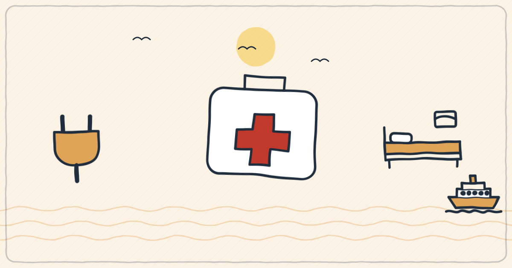

Can You Take a CPAP on a Cruise? Cords, Water, Who to Tell

Yes, every major line allows CPAP, BiPAP and APAP machines at no cost and without a doctor's letter. Tell the line's accessibility desk after booking, request the ship's approved extension cord (Carnival lets you bring a plain cord of your own), arrange distilled water and pack a first-night supply, and carry the machine on board in your hand luggage.
Thousands of cruise passengers travel with a CPAP every week, and the ships are set up for it. The machine itself is never the problem. What catches people out at the terminal or at bedtime is the cord, the water and an outlet on the wrong side of the cabin, and all three are solved with one email to the line after you book.
Can I bring a CPAP on a cruise?
Yes, on every major cruise line, free, with no approval process and no medical letter required. CPAP, BiPAP and APAP machines are classed as medical equipment, so they sit outside the ordinary rules on electrical devices. Royal Caribbean, Carnival, Norwegian, Princess, Celebrity, Holland America, MSC, Disney, Virgin and the premium lines all say the same thing in slightly different words.
The practical rules differ by line in only two places: whether you may bring your own extension cord, and how distilled water is supplied.
What do I need to do before sailing?
- Notify the accessibility desk as soon as you have a booking number. The CPAP goes on your reservation, and the ship prepares a cord and water for your cabin.
- Settle the cord question. On most lines, ask for the ship's medical extension cord and leave yours at home. On Carnival, pack a plain cord with no surge protector.
- Arrange distilled water through the same desk, and still pack enough for the first night or two.
- Put the machine in your carry-on. Checked bags are collected at the kerb and may not reach your cabin until evening.
- Pack spares: a mask cushion, tubing and filters, because no ship's shop stocks them.
CPAP rules by cruise line
| Line | Desk to contact | Extension cord | Distilled water |
|---|---|---|---|
| Royal Caribbean | Access Department | Ship lends one; your own is confiscated | On request, usually via your stateroom attendant |
| Carnival | Guest Access Services | Bring your own plain cord or strip, no surge protector | Paid; pre-order through Fun Shops, buy on board, or bring your own |
| Norwegian | Access Desk | Ship lends one on request | On request, delivered to the cabin |
| Princess | Access Office | Ship lends one on request | On request via Access Office or guest services |
| Celebrity | Access Department | Ship lends one on request | On request via attendant or Access Department |
| Holland America | Guest Accessibility | Ship lends one on request | Request in advance |
| MSC | Special needs form for your booking market | Ship lends one on request | Varies by ship and region |
| Disney | Special Services | Ship lends one on request | On request via Special Services |
Policies and department names shift, so treat the table as the pattern and confirm your own line's wording when you notify them. Written confirmation in your email is worth having at the terminal if a security officer questions the cord.
Why are extension cords such a big deal?
Fire. Cabins are small, built from materials chosen for flame resistance, and the lines ban guest power strips and extension cords because cheap ones overheat and surge protectors behave unpredictably on a ship's electrical system. Terminal security pulls them from bags and returns them at the end of the cruise.
The medical cord is the exception every line except Carnival makes, lent on request and often already in the cabin when you arrive. Carnival takes a different view and permits plain cords and strips with no surge protection, which saves the request but means you must read the packaging carefully.
The reason you need a cord at all is outlet placement. Older ships put the only outlets at the desk or vanity, across the cabin from the bed. Newer ships usually have outlets and USB ports on the nightstand, in which case the cord stays coiled in the drawer.
How much distilled water should I bring?
Humidifier chambers typically use 250–350 millilitres a night, so a week's cruise needs about 2–2.5 litres. The ship's supply, where provided, covers most of that. Pack one or two litres in your carry-on for the first nights in case the delivery is slow.
Medical liquids in reasonable quantities go through cruise terminal security without fuss. On the flight to the port, distilled water over 100 ml must go in checked baggage or be declared as medically necessary at airport security, so most people buy it at a pharmacy near the hotel the night before. In a pinch, bottled water for a night or two will not harm the machine, though it leaves mineral deposits if used for long.
Flying with a CPAP, batteries and letters
Cruise lines do not ask for a doctor's letter for a CPAP, unlike the letter they expect from pregnant passengers, and the machine has no place on the pre-boarding health questionnaire, which asks only about contagious symptoms. Border and airport security occasionally do, so on itineraries that cross borders, a one-paragraph letter stating the device is medically necessary smooths any questions. Keep the machine in its own case, out of your carry-on count, and expect it to be swabbed at airport security.
Batteries are rarely needed on board, because the cabin has power all night. They matter on land tours before or after the cruise, on long-haul flights, and on expedition-style trips. Lithium batteries fly in carry-on only, within the airline's watt-hour limit, usually 100 Wh without approval and up to 160 Wh with it.
If you also need alert equipment, captions or other accommodations, the same accessibility desk handles those requests, as cruising with hearing or vision loss describes. And since you will be sleeping with a machine humming beside you, what to do about a noisy cruise cabin is worth a look for the cabin position tips.
Travel insurance with sleep apnea
Sleep apnea counts as a pre-existing condition for travel medical insurance in Canada and the US. Declare it. Most insurers cover it easily as long as the condition is stable and no change in treatment has happened within their stability window, often 90 to 180 days for travellers over 60. A policy that was not told about the CPAP is a policy that can decline a related claim. What else the policy needs to say, and why your provincial plan will not help, is in cruise travel insurance for Canadians.
Want this checked for your own sailing? A licensed cruise consultant can price it up and answer questions for free, with no obligation.
Ask a cruise expert →One message does it all
Email the accessibility desk the day you book with three lines: CPAP on board, please supply the medical extension cord, please arrange distilled water. Keep the reply, pack the machine in your carry-on, and bedtime on the ship is exactly like bedtime at home. The vocabulary in those confirmations is explained in the cruise terms glossary if any of it is new.
Questions people also ask
Will security confiscate my CPAP extension cord at the cruise terminal?
On most lines, yes, if you bring your own. Guest extension cords, power strips and anything with a surge protector are banned for fire safety; the ship lends an approved medical cord on request. Carnival is the exception and allows a plain cord or power strip with no surge protection.
Can I buy distilled water on a cruise ship?
Most lines supply it on request, free or for a small charge, delivered to your cabin if you ask in advance or through your stateroom attendant. Supply varies by ship, so bring one or two litres in your carry-on for the first nights regardless.
Does a CPAP count as carry-on luggage when I fly to the port?
Air Canada, WestJet and the major US airlines treat a CPAP as a medical device that does not count towards your carry-on allowance, though you should confirm with your airline. Keep it in its own case and never check it; checked bags can reach your cabin hours after you do.